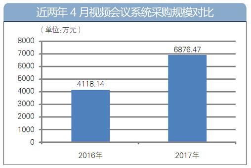

2017年视频会议市场稳步增长 云视频会议占据主力
-
 媒体报道
媒体报道
- 2017-08-04
媒体报道
视频会议在当今商务及政务领域已被广泛应用，并呈现稳步增长态势。根据中国产业调研网发布的报告数据，2015年我国视频会议系统行业市场规模达到92.91亿元，同比增长6.81%，2016年一季度中国硬件视频会议市场整体销售收入同比增长7.3%，高于之前7.1%的增长预测。说明视频协作的价值得到越来越多用户的认可。
与此同时，随着云计算技术的逐渐成熟，基于云计算的视频会议系统应运而生。美国硅谷云计算专业人士早在几年前就曾预言，“未来人们会对云视频会议在全球的发展速度惊叹不已”。《中国视频会议系统市场概览》研究报告也指出，2017年中国视频会议系统市场将迎来新一轮的快速发展，而大量数据及事实证明，云视频会议已成视频会议市场增长的主力军。
云视频会议风头强劲 企业未来不可或缺
过去五年，云计算市场繁荣发展与“互联网+ ”风潮涌动，使企业网络属性日渐突出。越来越多的企业将“云”技术视为核心竞争力，尤其是在全球化领域当中，“云”的运用更是企业降低成本、提高通信效率的重要途径。
与传统硬件支撑的视频会议系统不同，云视频会议系统正是以云计算技术为核心，由服务商构建云平台，企业无需购买硬件，也无需改造现有网络，即可通过租用服务的形式实现可视化的多方通信。因此，云视频会议，作为新经济形势下企业内外通信工具的代表，自然不可或缺。
市场陷入高度集中 打破同质化怪圈是突破
虽然，以云视频会议为主力的视频会议市场增长突飞猛进，但从厂商市场份额来看，市场集中度依然较高。华为、思科、宝利通、中兴及科达，常年居于国内视频会议硬件设备销售收入前五，但近年来市场份额增速却有所放缓。
与此同时，诸如会畅通讯、小鱼易连、随锐等多元化服务商显出了增长活力，市场份额逐年递增。根据Wainhouse的最新研究报告，会畅通讯已占据中国协同市场约30%的市场份额，在中国电话会议服务市场中占有率排名第二， 在网络会议服务市场占有排名第一。
尽管如此，过高的市场集中度，还是说明目前市面上的产品形式较为单一，同质化现象严重，同时也说明大数据、云计算等新技术需要全面应用与推广，云视频会议市场的蓝海潜力还有待激活，这些问题引发了企业及行业人士的积极思考。
自主成就竞争优势 创新引领行业进步
2016年12月27日，《“十三五”国家信息化规划》中指出要培育发展一批具有国际竞争力的云计算骨干企业，中国信息领域核心技术设备自主创新能力全面增强。2017年1月15日，《关于促进移动互联网健康有序发展的意见》又再次强调要加快建设并优化布局内容分发网络、云计算及大数据平台等新型应用基础设施。
受政策红利鼓舞，云视频领域的一些领军企业开启了“自主创新”，努力走出企业的特色之路。如拥有11年成熟云平台服务经验的会畅通讯，推出了为本土企业拓展海外市场打造的全球化解决方案，业内首创全球部署7大数据中心，将云视频会议平台全球化，不仅缩短了数据及信号的传输路径，还大大提升了海内外通信效率。这种由“自主创新”式思维实现的自我突破，引领了行业发展向前迈进了一大步，同时也有力证明了全球化布局将成为未来云视频领域领先服务商的发展趋势。
云视频会议前景大好 添彩云生态发展
随着视频会议在企业沟通协作中的重要价值越来越凸显，视频会议产品形态也逐渐向业务化及嵌入式的方向发展，相信越来越多的软件服务商、云服务商会加入到市场中来，共同推进云视频会议发展，构建大好前景。
同时，结合近年来新媒体发展潮流，移动直播、全景直播、VR直播等方式丰富了视频的采集方式和展现方式，H.264编码技术的广泛使用，云视频会议发展与场景的结合也将成为大势所趋，基于场景化的云服务将依然是云计算服务商的热衷选择，如华为、阿里云、乐视云等行业翘楚，也有以会畅通讯为代表的云视频会议领域精英。
未来，在行业精英领导下，服务商共同努力下，云视频会议市场的潜力或将全面激活，云视频会议有望上升为云生态发展中的重要主力，成为企业全球化布局不可或缺的组成部分，并为云生态发展及信息化建设事业增添势能与华彩。